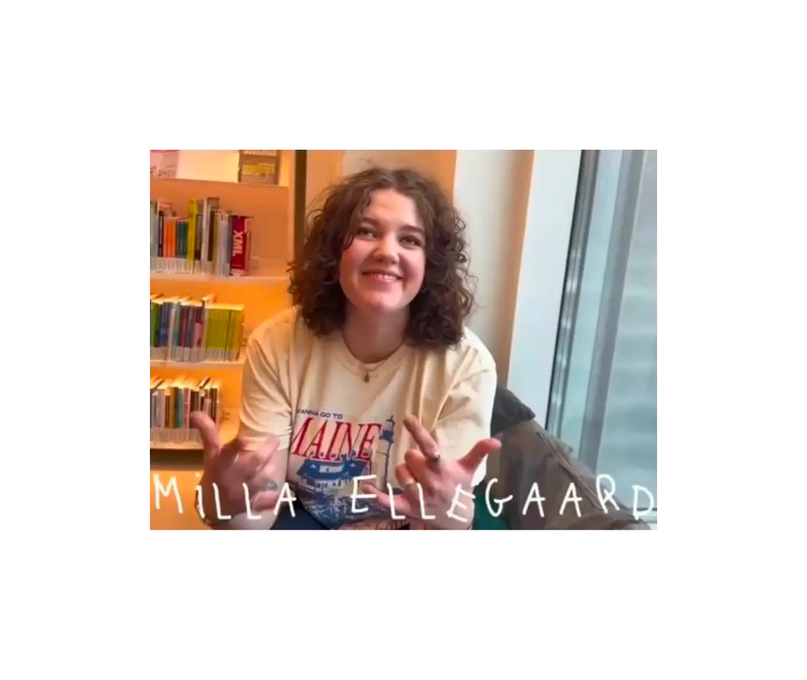
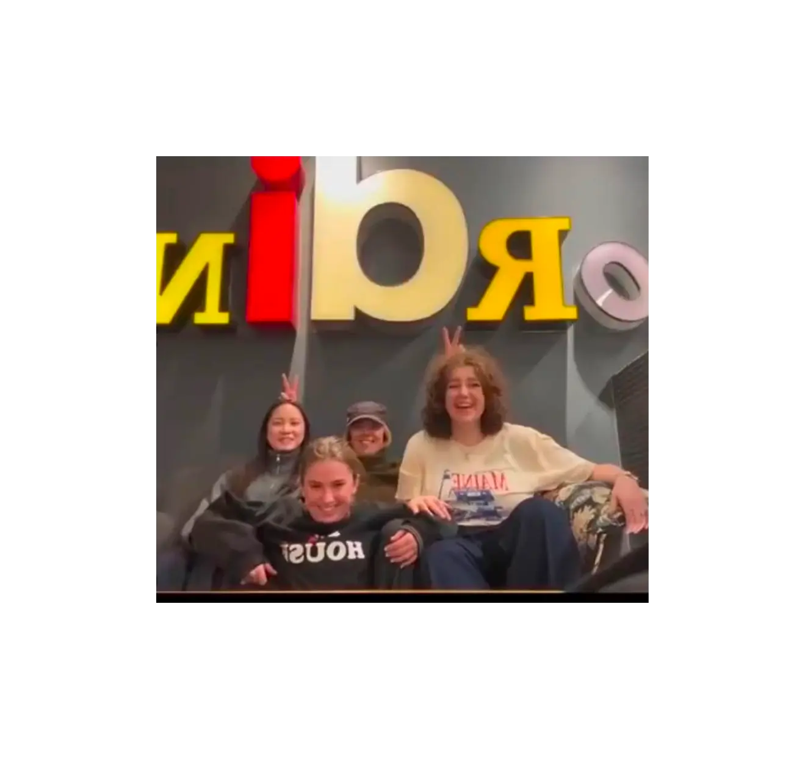
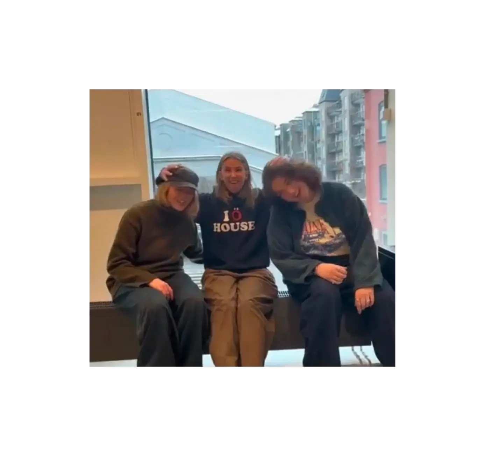

Tema 1 - Introuge
Hvad lavede jeg?
Den første uge brugte vi på at lære hinanden at kende og vi havde vores første opgave. Vi blev opdelt i små grupper og skulle lave en video sekvens som introducerede gruppemedlemmerne.



Processen
Min gruppe, bestående af seks personer, startede med at finde inspiration fra film og serier. Vi blev hurtigt enige om at arbejde ud fra serien "Friends". Vi havde mange forskellige ideer, men vi blev alle vilde med ideen om at "kaste" genstande til hinanden, og dette ville fungere som en transistion mellem hver person. Når vi kunne, filmede vi på skolen, og nogle filmede klip derhjemme, som en af gruppe medlemmerne klippede sammen.
Jeg blev introduceret til:
- Videoproduktion
- Idéudvikling
- Gruppearbejde
Jeg lærte:
- At kommunikere med gruppemedlemmer
- Hvordan man som gruppe bliver enig
- At arbejde med kameravinkler
- At formidle og udvikle en idé
Refleksioner:
- God kommunikation gør processen lettere
- Det er vigtigt at kunne gå på kompromis
- Uddele ansvar og dele opgaver er vigtigt for godt samarbejde